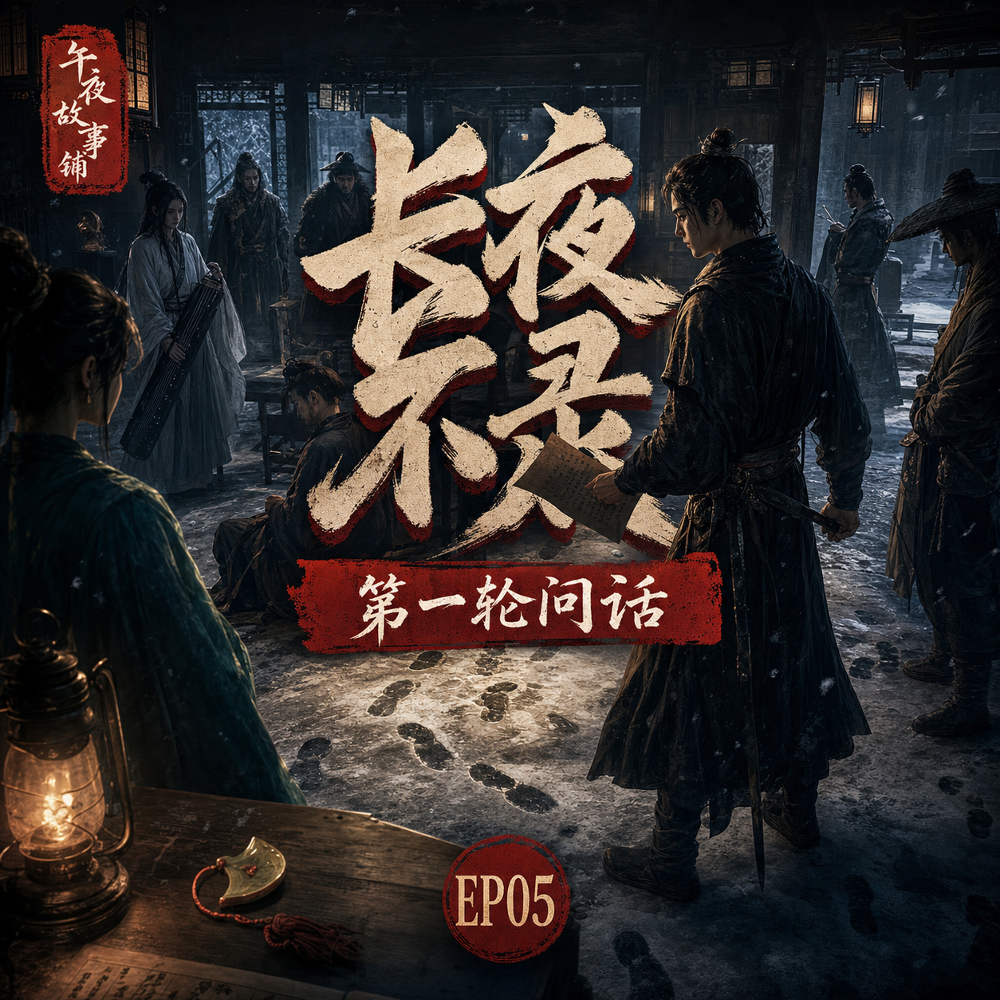

长夜不录：第一轮问话
沈砚封住断云驿，逐一问话，却发现每个人都听见了不同方向的脚步声

简介
柳照寒死于反锁房中，身上无伤，掌心握着红叶玉佩。沈砚封锁断云驿，开始第一轮问话。可他很快发现，驿站里的人证词并非互相印证，而是彼此撕裂：有人听见脚步从东来，有人听见脚步往西去，有人说三更后无人上楼，也有人说死者曾在窗前站过。
标签
- 古风
- 刑侦
- 武侠
- 问案
- 证词矛盾
- 密室
沈砚封住断云驿，逐一问话，却发现每个人都听见了不同方向的脚步声

柳照寒死于反锁房中，身上无伤，掌心握着红叶玉佩。沈砚封锁断云驿，开始第一轮问话。可他很快发现，驿站里的人证词并非互相印证，而是彼此撕裂：有人听见脚步从东来，有人听见脚步往西去，有人说三更后无人上楼，也有人说死者曾在窗前站过。